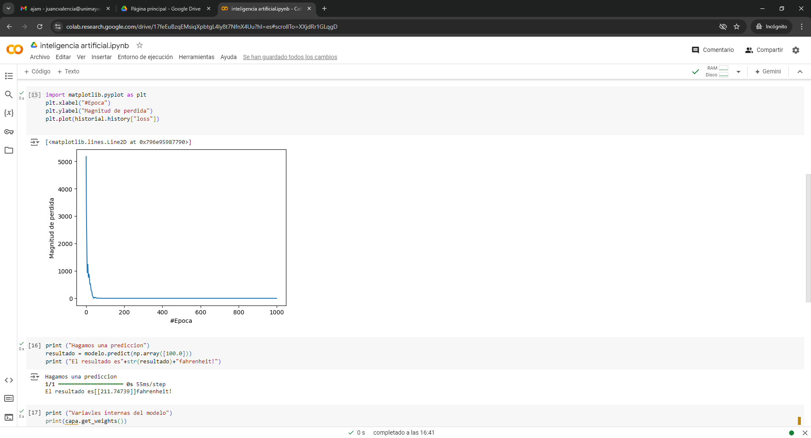

EN ESTA CLASE APRENDIMOS FUNDAMENTOS DE LA INTELIGENCIA ARTIFICIAL, ADEMAS APRENDIMOS GITHUB

vimos que datos se repetían y buscamos graficar de cierto que nos brindara dicha información en una grafica de pastel
Se agruparon las actividades que eran similares y se contaron manualmente
Elegimos la columna número 5 y sacamos las palabras repetidas con la ayuda de chatGPT y las rectificamos manualmente e hicimos lo mismo con las palabras únicas (que no se repetían) Luego último hicimos la suma de las palabras repetidas y también sacamos el número de palabras únicas y por último hicimos un gráfico circular 3D con los números de las palabras repetidas

INTELIGENCIA ARTIFICIAL APRENDIMOS ACERCA DE ESTE CONCEPTO: La inteligencia artificial es un campo de la ciencia relacionado con la creación de computadoras y máquinas que pueden razonar, aprender y actuar de una manera que normalmente requeriría inteligencia humana o que involucra datos cuya escala excede lo que los humanos pueden analizar.
El principio .fundamental de la IA es replicar, y luego superar, la forma en que los humanos perciben y reaccionan ante el mundo. Se está convirtiendo rápidamente en la piedra angular de la innovación. La IA, impulsada por varias formas de machine learning que reconocen patrones en los datos para permitir predicciones
Aprendimos el concepto de algoritmos de busqueda onjunto de instrucciones que están diseñadas para localizar un elemento con ciertas propiedades dentro de una estructura de datos;

El dia Las redes neuronales son un tipo de modelo de aprendizaje automático inspirado en la estructura y función del cerebro humano. Estas redes están compuestas por capas de nodos o neuronas artificiales que se comunican entre sí a través de conexiones sinápticas. Al procesar grandes cantidades de datos, las redes neuronales pueden aprender patrones y relaciones complejas, lo que las hace ideales para tareas como el reconocimiento de imágenes, el procesamiento del lenguaje natural y la toma de decisiones.
Una de las características más importantes de las redes neuronales es su capacidad para aprender y mejorar con el tiempo. Esto se logra a través de un proceso llamado "entrenamiento", en el que la red neuronal se expone a grandes cantidades de datos y se ajusta para minimizar el error entre sus predicciones y los resultados reales. Una vez entrenada, la red neuronal puede ser utilizada para hacer predicciones y tomar decisiones en situaciones nuevas y desconocidas.
nos adentramos en el mundo de las, redes neuronales en Google Colab, explorando cómo aplicar redes neuronales desde un único punto de entrada ingresando valores. Este viaje comenzó con la comprensión de los conceptos fundamentales de las redes neuronales
El proceso de entrenamiento de una red neuronal implica la exposición a grandes conjuntos de datos, permitiendo que la red ajuste sus pesos y mejore su precisión en tareas específicas, como el reconocimiento de patrones o la clasificación de imágenes. A medida que avanzamos en este aprendizaje, es fundamental dominar no solo la teoría detrás de las redes neuronales, sino también la práctica de implementarlas en entornos como Google Colab, donde la accesibilidad y la potencia de procesamiento se combinan para facilitar la experimentación y la innovación en el campo del aprendizaje automático.
punto 3 del parcial captura

comente que hace cada línea de código de acuerdo al vídeo:

Resultado encuesta


SEGUNDA ENCUESTA

import itertools # Importa la librería itertools, aunque no se utiliza en este código.
class Sentence():
# Clase base para representar sentencias lógicas.
def evaluate(self, model):
"""Evalúa la sentencia lógica."""
raise Exception("nothing to evaluate") # Lanzar una excepción si se llama a esta función.
def formula(self):
"""Devuelve la fórmula en forma de cadena que representa la sentencia lógica."""
return "" # Retorna una cadena vacía por defecto.
def symbols(self):
"""Devuelve un conjunto de todos los símbolos en la sentencia lógica."""
return set() # Retorna un conjunto vacío por defecto.
@classmethod
def validate(cls, sentence):
"""Valida que el objeto dado sea una instancia de Sentence."""
if not isinstance(sentence, Sentence):
raise TypeError("must be a logical sentence") # Lanza TypeError si no lo es.
@classmethod
def parenthesize(cls, s):
"""Añade paréntesis a una expresión si no están ya presentes."""
def balanced(s):
"""Verifica si una cadena tiene paréntesis balanceados."""
count = 0 # Contador para paréntesis.
for c in s: # Itera sobre cada carácter de la cadena.
if c == "(":
count += 1 # Incrementa si encuentra un paréntesis de apertura.
elif c == ")":
if count <= 0:
return False # Retorna False si encuentra un paréntesis de cierre sin par.
count -= 1 # Decrementa el contador al encontrar un cierre.
return count == 0 # Retorna True si todos los paréntesis están balanceados.
# Condiciones para determinar si se necesitan paréntesis.
if not len(s) or s.isalpha() or (
s[0] == "(" and s[-1] == ")" and balanced(s[1:-1])
):
return s # Retorna la cadena original si ya está adecuadamente balanceada.
else:
return f"({s})" # Añade paréntesis si no es necesario.
class Symbol(Sentence):
# Clase que representa un símbolo en la lógica
.
def __init__(self, name):
self.name = name # Inicializa el símbolo con un nombre.
def __eq__(self, other):
return isinstance(other, Symbol) and self.name == other.name # Comparación de igualdad.
def __hash__(self):
return hash(("symbol", self.name)) # Genera un hash para el símbolo.
def __repr__(self):
return self.name # Representación del símbolo como su nombre.
def evaluate(self, model):
"""Evalúa el símbolo en el modelo dado."""
try:
return bool(model[self.name]) # Retorna el valor booleano asociado al símbolo.
except KeyError:
raise EvaluationException(f"variable {self.name} not in model") # Lanza excepción si el símbolo no está en el modelo.
def formula(self):
return self.name # Retorna el nombre del símbolo como su fórmula.
def symbols(self):
return {self.name} # Retorna un conjunto con el símbolo.
class Not(Sentence):
# Clase que representa la negación de una sentencia.
def __init__(self, operand):
Sentence.validate(operand) # Valida el operando.
self.operand = operand # Inicializa el operando.
def __eq__(self, other):
return isinstance(other, Not) and self.operand == other.operand # Comparación de igualdad.
def __hash__(self):
return hash(("not", hash(self.operand))) # Genera un hash para la negación.
def __repr__(self):
return f"Not({self.operand})" # Representación de la negación.
def evaluate(self, model):
return not self.operand.evaluate(model) # Evalúa la negación del operando.
def formula(self):
return "¬" + Sentence.parenthesize(self.operand.formula()) # Retorna la fórmula de la negación.
def symbols(self):
return self.operand.symbols() # Retorna los símbolos del operando.
class And(Sentence):
# Clase que representa la conjunción de varias sentencias.
def __init__(self, *conjuncts):
for conjunct in conjuncts:
Sentence.validate(conjunct) # Valida cada conjunción.
self.conjuncts = list(conjuncts) # Almacena las conjunciones.
def __eq__(self, other):
return isinstance(other, And) and self.conjuncts == other.conjuncts # Comparación de igualdad.
def __hash__(self):
return hash(
("and", tuple(hash(conjunct) for conjunct in self.conjuncts))
) # Genera un hash para la conjunción.
def __repr__(self):
conjunctions = ", ".join(
[str(conjunct) for conjunct in self.conjuncts]
) # Crea una representación de las conjunciones.
return f"And({conjunctions})"
def add(self, conjunct):
Sentence.validate(conjunct) # Valida la nueva conjunción.
self.conjuncts.append(conjunct) # Agrega la conjunción.
def evaluate(self, model):
return all(conjunct.evaluate(model) for conjunct in self.conjuncts) # Evalúa todas las conjunciones.
def formula(self):
if len(self.conjuncts) == 1:
return self.conjuncts[0].formula() # Retorna la fórmula si solo hay una conjunción.
return " ∧ ".join([Sentence.parenthesize(conjunct.formula())
for conjunct in self.conjuncts]) # Retorna la fórmula de la conjunción.
def symbols(self):
return set.union(*[conjunct.symbols() for conjunct in self.conjuncts]) # Retorna los símbolos de las conjunciones.
class Or(Sentence):
# Clase que representa la disyunción de varias sentencias.
def __init__(self, *disjuncts):
for disjunct in disjuncts:
Sentence.validate(disjunct) # Valida cada disyunción.
self.disjuncts = list(disjuncts) # Almacena las disyunciones.
def __eq__(self, other):
return isinstance(other, Or) and self.disjuncts == other.disjuncts # Comparación de igualdad.
def __hash__(self):
return hash(
("or", tuple(hash(disjunct) for disjunct in self.disjuncts))
) # Genera un hash para la disyunción.
def __repr__(self):
disjuncts = ", ".join([str(disjunct) for disjunct in self.disjuncts]) # Crea una representación de las disyunciones.
return f"Or({disjuncts})"
def evaluate(self, model):
return any(disjunct.evaluate(model) for disjunct in self.disjuncts) # Evalúa si alguna disyunción es verdadera.
def formula(self):
if len(self.disjuncts) == 1:
return self.disjuncts[0].formula() # Retorna la fórmula si solo hay una disyunción.
return " ∨ ".join([Sentence.parenthesize(disjunct.formula())
for disjunct in self.disjuncts]) # Retorna la fórmula de la disyunción.
def symbols(self):
return set.union(*[disjunct.symbols() for disjunct in self.disjuncts]) # Retorna los símbolos de las disyunciones.
class Implication(Sentence):
# Clase que representa una implicación.
def __init__(self, antecedent, consequent):
Sentence.validate(antecedent) # Valida el antecedente.
Sentence.validate(consequent) # Valida el consecuente.
self.antecedent = ante
from logic import *
# Definición de los símbolos
rain = Symbol("rain")
bbc = Symbol("bbc")
unimayor = Symbol("unimayor")
# Conjunto de conocimiento
knowledge = And(
Implication(Not(rain), bbc), # Si no llueve, los estudiantes visitan BBC
Or(bbc, unimayor), # Estudiantes visitan BBC o Unimayor
Not(And(bbc, unimayor)), # No visitan ambos lugares a la vez
unimayor # Estudiantes visitaron Unimayor
)
# Inferencias
print("¿Qué podemos inferir acerca de BBC?:", model_check(knowledge, bbc))
print("¿Qué podemos inferir acerca del clima?:", model_check(knowledge, rain))